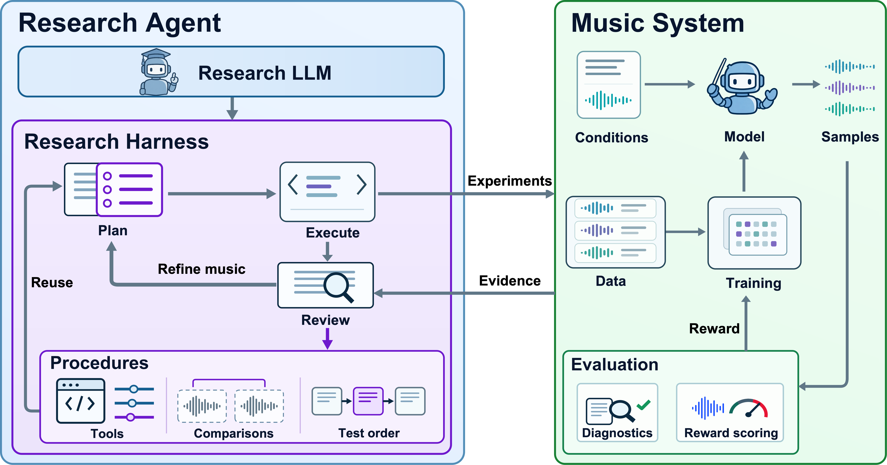

Adaptive improvement of the music system
Experimental feedback guides the agent from policy optimization to reward evaluation and SFT conditioning data, then back to RL.
PAPER DEMO
Improving music generation—and the research strategies that guide its development.
Starting from a fixed PPO recipe, MuLa-RSI uses experimental feedback to guide improvements to music generation. The resulting model improves singer similarity, lyric fidelity, and perceptual-quality metrics.

Experimental feedback guides the agent from policy optimization to reward evaluation and SFT conditioning data, then back to RL.
Findings become reusable diagnostics and decision rules in the research harness, guiding later experiments and compute allocation.
LISTENING EXAMPLES
Compare Base, PPO, and Iterations 1–3 using the reference audio, lyrics, and tags.
Ready to listen